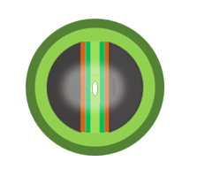
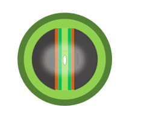
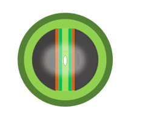

Ion Milling
Instructions :
Select the number of Ion beams for the Ion Milling process. Then click on "Get final sample" to get final sample.
Select the number of ion beams.
Choose :
ONE
Two
Start Ion Milling
Get final Sample
Reset

 
